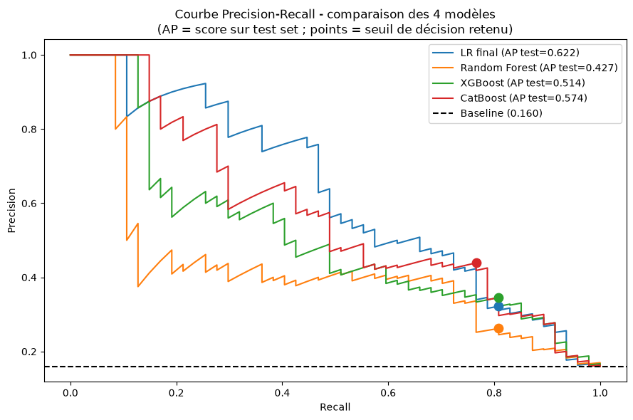

Pipeline ML et choix techniques
Pipeline en 5 étapes
CSV (3 sources)
│
▼
1. CHARGEMENT src/data/loader.py
Jointure des 3 fichiers sur id_employee → 1 DataFrame (1470 lignes)
│
▼
2. PREPROCESSING src/data/preprocessing.py
Correction des typos, conversion des booléens, suppression des colonnes inutiles
│
▼
3. FEATURE ENGINEERING src/features/build_features.py
Création des ratios, suppression des variables redondantes, séparation X / y
│
▼
4. ENCODAGE src/features/encoding.py
Label encoding binaire (genre), ordinal (fréquence déplacements), one-hot (poste, département, statut marital)
│
▼
5. ENTRAÎNEMENT src/models/train.py
CatBoost avec scale_pos_weight, RandomizedSearchCV sur recall, sélection de features par importance
Feature engineering
Trois ratios ont été créés pour capturer des dynamiques RH non directement observables :
| Feature | Formule | Interprétation |
|---|---|---|
ratio_revenu_experience |
revenu_mensuel / annee_experience_totale |
Revenu rapporté à l'expérience - capte le sentiment de sous-rémunération |
ratio_evolution |
annees_dans_le_poste_actuel / annees_dans_l_entreprise |
Stabilité de poste - un ratio proche de 1 indique une stagnation |
ratio_relation_manager |
annees_sous_responsable_actuel / annees_dans_l_entreprise |
Stabilité managériale - un ratio faible indique des changements fréquents |
Cas limites :
ratio_evolutionetratio_relation_manager: imputés à 0 siannees_dans_l_entreprise = 0(employé nouvellement arrivé)ratio_revenu_experience: imputé par la médiane siannee_experience_totale = 0(le salaire ne peut pas être nul)
Sélection de features
Après encodage, 31 features sont disponibles. Une sélection a été opérée en deux étapes :
- Feature importance CatBoost (intrinsèque) : features avec importance < 1% identifiées
- Permutation importance (validation croisée) : croisement avec les features à contribution nulle ou négative sur le recall
Features supprimées car faible pouvoir prédictif (< 1% d'importance ET permutation importance ≤ 0) :
domaine_etude_*(toutes les modalités)poste_Cadre Commercial,poste_Ressources Humaines,poste_Senior Managerdepartement_Ressources Humainesstatut_marital_Marié(e)
Comparaison des modèles
Trois modèles non-linéaires ont été testés, en plus d'une régression logistique comme baseline :
| Modèle | Recall test | Précision test | Overfitting | Retenu |
|---|---|---|---|---|
| Régression logistique (baseline) | 0.766 | 0.439 | Non | Non (linéaire) |
| Random Forest | 0.766 | 0.388 | Modéré | Non |
| XGBoost | 0.766 | 0.418 | Marqué (recall train : 0.96) | Non |
| CatBoost | 0.766 | 0.439 | Non | Oui |
Pourquoi CatBoost ?
La consigne exigeait un modèle non-linéaire. CatBoost est le seul à ne pas présenter d'overfitting significatif (recall train ≈ recall test), tout en égalant les meilleures performances sur le jeu de test. Il gère nativement les variables catégorielles et intègre une régularisation forte, sans nécessiter de StandardScaler.
Gestion du déséquilibre de classes
Le dataset est déséquilibré : ~16% de départs (239/1470). Deux approches ont été comparées :
- SMOTE (sur-échantillonnage synthétique) - utilisé pour LR et Random Forest
scale_pos_weight(pondération des classes) - utilisé pour CatBoost et XGBoost
CatBoost utilise scale_pos_weight = n_négatifs / n_positifs pour pénaliser davantage les faux négatifs.
Métriques finales
Le modèle a été évalué au seuil de décision 0.535 (ajusté depuis le défaut 0.5 pour maximiser le recall) :
| Métrique | Valeur | Interprétation |
|---|---|---|
| Recall | 0.766 | Sur 47 départs réels, 36 sont détectés à l'avance |
| Précision | 0.439 | Sur 82 alertes émises, 36 sont de vrais départs |
| F1-score | 0.563 | Compromis recall / précision |
| Faux négatifs | 11 | Départs non détectés - coût métier le plus élevé |
| Faux positifs | 46 | Alertes inutiles - coût acceptable (entretien RH) |

Les points sur chaque courbe indiquent le seuil de décision retenu pour chaque modèle. Le point CatBoost correspond au seuil 0.535.
Pourquoi prioriser le recall ?
Dans ce contexte, rater un départ (faux négatif) est plus coûteux que signaler à tort un employé qui reste (faux positif). Le coût de remplacement d'un employé est estimé à 6-9 mois de salaire ; le coût d'un entretien RH préventif est négligeable.
Feature importance (SHAP)
Les variables les plus influentes sur la prédiction, par ordre décroissant :
heure_supplementaires- facteur dominant : effectuer des heures sup multiplie fortement le risqueratio_evolution- stagnation de poste associée à un risque accruratio_relation_manager- instabilité managériale corrélée au départsatisfaction_employee_nature_travail- faible satisfaction des tâchesannee_experience_totale- les profils très expérimentés partent plus
L'analyse SHAP (TreeExplainer) confirme que heure_supplementaires est la variable
la plus déterminante, avec un effet directionnel fort : True pousse vers le départ.
Hyperparamètres retenus
Sélectionnés par RandomizedSearchCV avec scoring recall, 5-fold cross-validation, 50 itérations :
| Paramètre | Valeur | Rôle |
|---|---|---|
iterations |
300 | Nombre d'arbres |
depth |
4 | Profondeur max des arbres |
learning_rate |
0.05 | Pas d'apprentissage |
l2_leaf_reg |
5 | Régularisation L2 |
subsample |
0.8 | Fraction des données par arbre |
scale_pos_weight |
~5.15 | Ratio négatifs/positifs pour le déséquilibre |
random_seed |
42 | Reproductibilité |